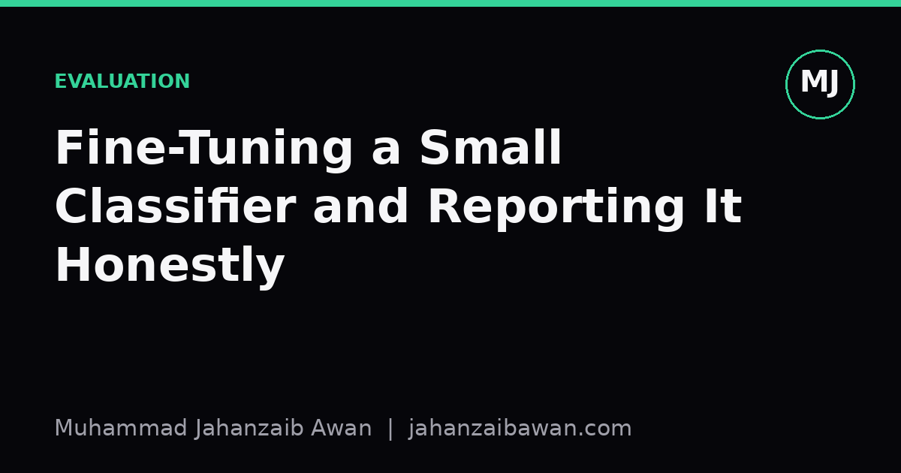

Fine-Tuning a Small Classifier and Reporting It Honestly
A worked walkthrough of what actually happens when you fine-tune a small classifier, and the reporting habits that keep your results trustworthy.

Why the honest version is harder than the demo version
Fine-tuning a small classifier is one of the easiest things to do badly while still producing a plausible-looking number. You take a pretrained encoder, bolt on a linear head, run a few epochs, and report accuracy. The problem is that almost every step in that chain has a quiet failure mode that inflates the final figure, and none of them show up unless you go looking. I want to walk through a realistic example end to end, not to show off a result, but to show the decisions that make a reported number mean something.
Suppose the task is classifying short product reviews into three sentiment classes: negative, neutral, positive. We have around six thousand labelled examples scraped over time from one retailer. It is a small, unglamorous dataset, which is exactly the kind of setting where sloppy evaluation does the most damage, because there is no massive test set to dilute the mistakes.
Building the split before touching the model
The first decision, and the one most often skipped, is how to split the data. A random row-level split sounds neutral but is rarely safe. If reviews from the same product appear in both training and test sets, the model can learn product-specific vocabulary rather than general sentiment, and the test score becomes an estimate of memorisation, not generalisation. The fix is to split by product or by time, whichever mirrors how the model will actually be used. If it will score new products in the future, a time-based split, training on reviews before a cut-off date and testing on reviews after it, is the honest choice even though it usually produces a lower, less flattering number.
With six thousand examples, I would set aside roughly 15 percent for validation and 15 percent for test, grouped by product so no product leaks across sets. That leaves around four thousand two hundred for training. It is tempting to skip a separate validation set and tune on the test set directly to save data, but that quietly turns the test score into a validation score, and you lose the one number that tells you how the model behaves on data it has never influenced in any way.
Before any neural network is involved, I would fit a baseline: a logistic regression on TF-IDF features, or a simple bag-of-words model. Say this baseline reaches 71 percent accuracy on the test split. This number matters enormously, because it sets the bar that fine-tuning has to clear to justify its cost. If a pretrained transformer only gets to 73 percent after hours of GPU time, that two-point gain needs to be weighed honestly against the simplicity and speed of the baseline.
Fine-tuning, and the small decisions that change the answer
Now the fine-tuning itself. A small pretrained encoder, a classification head, a modest learning rate, perhaps three to five epochs with early stopping on validation loss. Here is where another leakage path opens up: if the tokenizer or any preprocessing statistics, such as vocabulary frequency cut-offs, are computed on the full dataset including test examples, information has already crossed the boundary before training even starts. All preprocessing decisions should be fit on the training split alone and then applied unchanged to validation and test.
Suppose after training, the model reaches 76 percent accuracy on the held-out test set, a five-point improvement over the baseline. Before reporting that as the headline number, two more questions need answering. First, how stable is it? Training the same model with three different random seeds and averaging might give 75, 76, and 78 percent, a spread of three points. Reporting only the best run, which is a common and dishonest shortcut, overstates what a user can expect from the method; reporting the mean and spread across seeds gives a truer picture of what fine-tuning this way reliably delivers.
Second, is the five-point gap meaningful given the test set size? With roughly nine hundred test examples split across three classes, a few dozen examples flipping between correct and incorrect can shift accuracy by a couple of points purely by chance. A simple way to express this honestly is to compute a confidence interval around the accuracy, for instance using a bootstrap over the test predictions, and report something like 76 percent with a 95 percent interval of 73 to 79 percent. If the baseline's interval overlaps substantially with that range, the improvement is real but modest, not a decisive win, and the write-up should say so plainly rather than implying a clean victory.
What goes in the write-up
A report that respects the reader includes the split strategy and why it was chosen, the baseline and its score, the fine-tuned model's score averaged across multiple seeds with a measure of spread, and an honest statement of overlap or separation between the two. It also includes the per-class breakdown, because an aggregate accuracy can hide a model that performs well on the majority class and poorly on neutral reviews, which are often the hardest and most useful class to get right in practice.
None of this is exotic statistics. It is mostly discipline: splitting data the way it will actually be used, fitting a baseline before reaching for a bigger model, running more than one seed, and reporting uncertainty instead of a single flattering number. The payoff is that when someone else tries to reproduce or build on the work, the reported numbers hold up, and that, more than any leaderboard position, is what makes a small classifier project worth trusting.